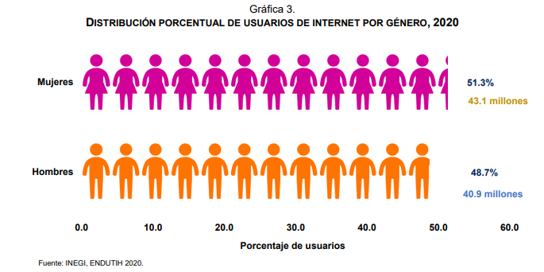
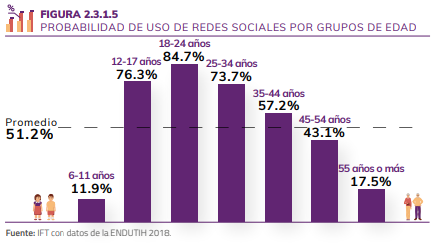
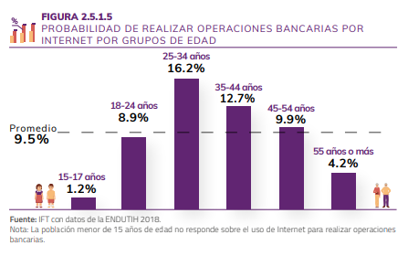
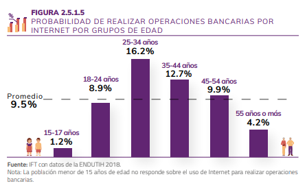

¿Cómo usamos el internet en México?, una perspectiva estadística
Menú
Género de los usuarios
Actividades de los usuarios
Puntos de acceso a internet
Cambiar idioma/change language
Género de los usuarios
En México hay 80.6 millones de usuarios de Internet, que representan el 70.1% de la población de seis años o más. Esta cifra revela un aumento de 4.3 puntos porcentuales respecto de la registrada en 2018 (65.8%) y de 12.7 puntos porcentuales respecto a 2015 (57.4 por ciento).
Se estima en 20.1 millones el número de hogares que disponen de Internet (56.4%), ya sea mediante una conexión fija o móvil, lo que significa un incremento de 3.5 puntos porcentuales con respecto a 2018 y de 17.2 puntos porcentuales en comparación con los resultados de 2015 (39.2 por ciento).
De los 80.6 millones de usuarios de Internet de seis años o más, 51.6% son mujeres y 48.4% son hombres.
Entre 2017 y 2019, los usuarios en la zona urbana pasaron de 71.2% a 76.6%, mientras que en la zona rural el incremento fue de 39.2% a 47.7% de usuarios, de 6 años o más.
Los tres principales medios para la conexión de usuarios a Internet en 2019 fueron: celular inteligente (Smartphone) con 95.3%; computadora portátil con 33.2%, y computadora de escritorio con 28.9 por ciento.

Actividades de los usuarios de internet
Con respecto de las actividades por Internet analizadas en el estudio, los resultados muestran que a nivel nacional las que más realizan las personas de 6 años o más son usar redes sociales con el 51%, consumir contenidos audiovisuales gratuitos con el 49% y realizar actividades de capacitación o educación (cursos, tutoriales, etcétera.) con el 46%. Sin embargo, el uso de las redes sociales es la actividad que mayor brecha tiene entre zonas urbanas y rurales, ya que mientras que en las zonas urbanas 57 de cada 100 personas usa redes sociales, en las zonas rurales solo 30 de cada 100 lo hace.
Por otro lado, las actividades menos realizadas por Internet son efectuar operaciones bancarias y vender en línea, puesto que solo el 10% y 6% de la población las realiza, respectivamente. Sobresale que en las zonas rurales solo 2 de cada 100 personas realiza estas actividades, mientras que en las zonas urbanas 12 de cada 100 personas realiza operaciones bancarias y 8 de cada 100 vende por Internet.

 

Puntos de accceso a internet
Este 2022, durante su Cuarto Informe de Gobierno, la Jefa de Gobierno de la Ciudad de México, Claudia Sheinbaum Pardo, destacó que “el acceso a Internet es un derecho, no un privilegio” y dijo que desde hace tres años se ha logrado la ampliación y modernización del C5 y, hoy en día, se alcanzan 63 mil 191 cámaras y se espera cerrar el año 2 mil 800 más.
Respecto a los puntos de acceso gratuito a internet, señaló que la Ciudad de México ahora cuenta con 33 mil, “somos ahora la ciudad más conectada del mundo”, celebró.
A julio de 2022, la ciudad ya contaba con internet gratuito en mil 182 escuelas primarias y secundarias, en 23 planteles del Instituto de Educación Media Superior (IEMS), siete planteles de universidades, 50 estaciones de Metrobús, 177 Unidades Habitacionales y 84 colonias de la periferia.
Consulta los puntos de acceso a internet aquí.